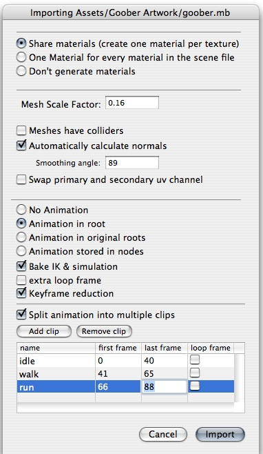
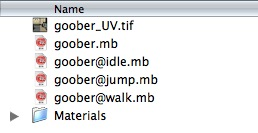
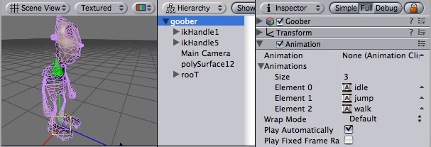

Previous
Previous
Unity's Animation System allows you to create beautifully animated skinned characters. The Animation System supports animation blending, mixing, additive animations, walk cycle time synchronization, animation layers, control over all aspects of the animation playback (time, speed, blend-weights), mesh skinning with 1, 2 or 4 bones per vertex and finally physically based ragdolls.
Making an animated character involves two things; moving them through the world and animating them accordingly.
This page focuses on the animation. If you want to learn more about moving characters around (for a Super Mario Bros style game or a first-person shooter), go here.
You can download an example project showing pre-setup animated characters here.
Importing The Animations
First of all we have to import the character. Unity natively imports Maya (.mb/.ma) files, Cinema 4D (.c4d) files, and fbx files which can be exported from most animation packages. Click here to learn how to export from your modelling/animation package.
Importing Animations using Animation Splitting
The most convenient way for animators to work is to have a single model containing all animations. When importing the animated model, you can define which frames make up each part of the animation. Unity will automatically split the animation into the individual parts, called Animation Clips.
For example:
- idle animation during frames 0 - 40
- run animation during frames 41 - 65
- walk animation during frames 66 - 83
To import the animations you simply place the model in your project folder. Unity will now automatically import it. Now highlight it in the project view and choose Assets -> Import Settings... from the main menu.

The Import Settings Dialog for a mesh
In the Import Settings' Split Animations table you tell Unity which frames in your 3D file make up which Animation Clip. The names you specify here are used to activate them in your game.
| Property: | Function: |
|---|---|
| Defines the Animation Clip's name within Unity. | |
| the first frame of the animation. The frame number refers to the same frame as in the 3D program used to create the animation. | |
| The last frame of the animation. | |
| If enabled, an extra loop frame is inserted at the end of the animation. This frame matches the first frame in the clip. Use this if you want to make a looping animation and your artwork has not been created in such a way that the first and last frame of the animation match up exactly. |
Importing Animations using multiple model files
The other way to import animations is to follow the @ animation naming scheme. You create seperate model files and name them like: 'model name'@'animation name'.fbx

An example of 4 animation files for an animated character
Unity automatically imports all 4 files and collects all animations to the file without the @ sign in. In the example above, the goober.mb file will be setup to reference idle, jump, and walk automatically.
Importing Inverse Kinematics
When importing animated Characters from Maya that are created using IK, you have to check the Bake IK & simulation box in the import settings. Otherwise, your Character will not animate correctly.
Bringing the Character into the Scene
When you have imported your model you drag the object from the Project view into the Scene view or Hierarchy.

The animated character is added by dragging it into the scene
The character above has 3 animations in the animation list and no default animation. You can add more animations to the character by dragging animation clips from the Project View on to the character (in either the Hierarchy View or a Scene View). This will also set the default animation. When you hit play the default animation will be played.
TIP: you can use this to quickly test if your animation plays back correctly. Also use the Wrap Mode to view different behaviors of the animation- especially looping.
Animating the Character
The actual animation of characters is done through Unity's scripting interface.
Animation Blending
In today's games, animation blending is an essential feature to ensure that characters have smooth animations. Animators create separate animations, e.g. a walk cycle, run cycle, idle animation or shoot animation. At any point in time in your game you need to be able to transition from the idle animation into the walk cycle and vice versa. Of course you don't want any sudden jumps in the motion. You want the animation to smoothly transition.
This is where animation blending comes in. In Unity you can have an arbitrary amount of animations playing on the same character. All animations are blended or added together to generate the final animation.
Our first step will be to make a character smoothly blend between the idle and walk animations. In order to make our job simpler when scripting, we will first set the Wrap Mode of the animation to Loop. Then we will turn off Play Automatically to make sure our script is the only one playing animations.
Our first script for animating the character is quite simple; we only need some way to detect how fast our character is moving, and then fade between walk and idle animation. For this simple test we use the pre-setup input axes.
function Update ()
{
if (Input.GetAxis("Vertical") > 0.2)
animation.CrossFade ("walk");
else
animation.CrossFade ("idle");
}
To get this script running:
- Create a javascript using Assets -> Create Other -> Javascript.
- Copy & Paste the code into it
- Drag the script onto the character (It needs to be the same game object as the animation)
When you hit the play button, The character will start walking in place when you hold the up arrow key and return to the idle pose when you release it.
Animation Layers
Layers are an incredibly useful concept that allow you to group animations and prioritize weighting.
in Unity's animation system, you can blend between as many animation clips as you want. You can assign blend weights manually or simply use animation.CrossFade, which will animate the weight automatically.
Blend weights are always normalized before being applied
Let's say you have a walk cycle and a run cycle, both have a weight of 1 (100%). When Unity generates the final animation it will normalize the weights, which means walk will contribute 50% to the animation, the run cycle will also contribute 50%.
This is all very nice, but often you want to prioritize which animation receives most weight when there are two animations playing. Surely you could just make sure that the weight sums up to 100% manually, but it is a lot easier to use layers for this purpose.
Layering Example
For example you might have a shoot animation, an idle and a walk cycle. You will want to continously fade between the walk and idle animation based on the player's speed. But when the player shoots you want to only show the shoot animation. Thus the shoot animation essentially has a higher priority.
The easiest way to do this is to simply keep playing the walk and idle animations while shooting. Then we need to make sure that the shoot animation is in a higher layer than idle and walk. This means the shoot animation will receive blend weights first. The walk and idle animation will receive weights only if the shoot animation doesn't use all of the 100% blend weights. So when CrossFading the shoot animation in, the weight will start out at zero and over a short period become 100%. In the beginning the walk and idle layer will still receive blend weights but when the shoot animation is completely faded in, they will receive no weights at all. This is exactly what we need!
function Start ()
{
// Set all animations to loop
animation.wrapMode = WrapMode.Loop;
// except shooting
animation["shoot"].wrapMode = WrapMode.Once;
// Put idle and walk into lower layers (The default layer is always 0)
// This will do two things
// - Since shoot and idle/walk are in different layers they will not affect
// each other's playback when calling CrossFade.
// - Since shoot is in a higher layer, the animation will replace idle/walk
// animations when faded in.
animation["shoot"].layer = 1;
// Stop animations that are already playing
//(In case user forgot to disable play automatically)
animation.Stop();
}
function Update () {
// Based on the key that is pressed,
// play the walk animation or the idle animation
if (Mathf.Abs(Input.GetAxis("Vertical")) > 0.1)
animation.CrossFade("walk");
else
animation.CrossFade("idle");
// Shoot
if (Input.GetButtonDown ("Fire1"))
animation.CrossFade("shoot");
}
By default the animation.Play or animation.CrossFade function will stop or fade out animations that are in the same layer. This is exactly what we want in mose cases. In our shoot, idle, run example. Playing idle and run will not affect the shoot animation and vice versa. (You can change this behaviour with an optional parameter to animation.CrossFade if you like)
Additive Animations and Animation Mixing
Additive Animations and Animation mixing allow you to cut down on the number of animations you have to create for your game, and are important to creating facial animation.
Let's say you want to create a character that leans to the sides when running and turning.
You already made a walk and run cycle, now you could make a walk-lean-left, walk-lean-right, run-lean-left, run-lean-right animation.
But that means you just doubled the amount of animation work! Creating a huge amount of animations is not feasiable. Additive animations and Mixing to the rescue!
Additive Animation Example
Additive animations allow you to overlay the effects of animation on top of any others that may be playing. When making additive animations, Unity will calculate the difference between the first frame in the animation clip and the current frame. Then it will apply this difference on top of all other playing animations.
Now you only have to make a lean-left and lean-right animation. Unity will then layer this animation on top of the walk, idle or run cycle.
Here is the code to make that happen:
private var leanLeft : AnimationState;
private var leanRight : AnimationState;
function Start ()
{
leanLeft = animation["leanLeft"];
leanRight = animation["leanRight"];
// Put the leaning animation in a seperate layer
// So that other calls to CrossFade won't affect it.
leanLeft.layer = 10;
leanRight.layer = 10;
// Set the lean animation to be additive
leanLeft.blendMode = AnimationBlendMode.Additive;
leanRight.blendMode = AnimationBlendMode.Additive;
// Set the lean animation ClampForever
// With ClampForever animation's will not automatically
// stop when reaching the end of the clip
leanLeft.wrapMode = WrapMode.ClampForever;
leanRight.wrapMode = WrapMode.ClampForever;
// Enable the animation and fade it in completely
// We don't use animation.Play here because we manually adjust the time
// in the Update function.
// Instead we just enable the animation and set it to full weight
leanRight.enabled = true;
leanLeft.enabled = true;
leanRight.weight = 1.0;
leanLeft.weight = 1.0;
// For testing just play run animation and loop it
animation["walk"].wrapMode = WrapMode.Loop;
animation.Play("walk");
}
// Every frame just set the normalized time
// based on how much lean we want to apply
function Update ()
{
var lean = Input.GetAxis("Horizontal");
// normalizedTime is 0 at the first frame and 1 at the last frame in the clip
leanLeft.normalizedTime = -lean;
leanRight.normalizedTime = lean;
}
Tip: When using Additive animations it critical that you are also playing some other non-additive animation on every transform that is also used int eh additive animation, otherwise the animations will add on top of the last frame's result. This is most certainly not what you want.
You have learned how to make a basic character animation please see the projects for in-depth examples of character animation and the animation script interface.